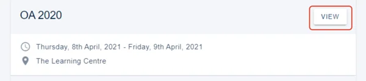
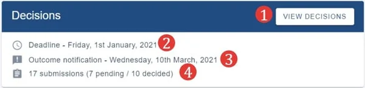

Viewing and making decisions
ReviewingLast reviewed 28 July 2026
A committee member can view decisions but can also, if permissions allow, make decisions on submissions.#
Register for an Oxford Abstracts account or log in, if you already have an account. Once logged in, your personal dashboard will show a list of the events for which your email is associated with.
Click View

You can then:
1) View decisions (See Recording a decision (accepting/ rejecting/ withdrawing a submission) for further guidance.
2) See the submission deadline.
3) The outcome notification date.
4) The number of submissions and their status.

Should you require any further assistance, please contact our support desk via our Contact Form.

Did this page solve it?
Thanks — this helps us fix it.